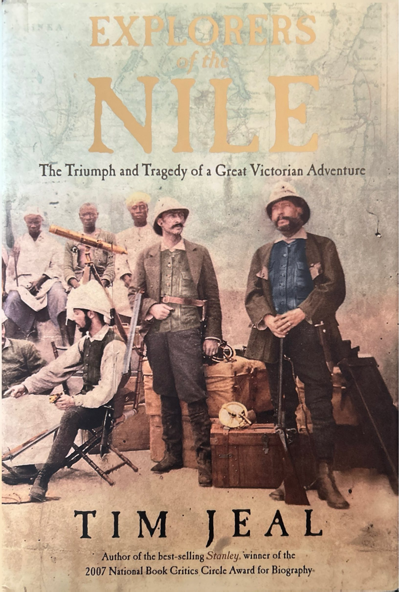
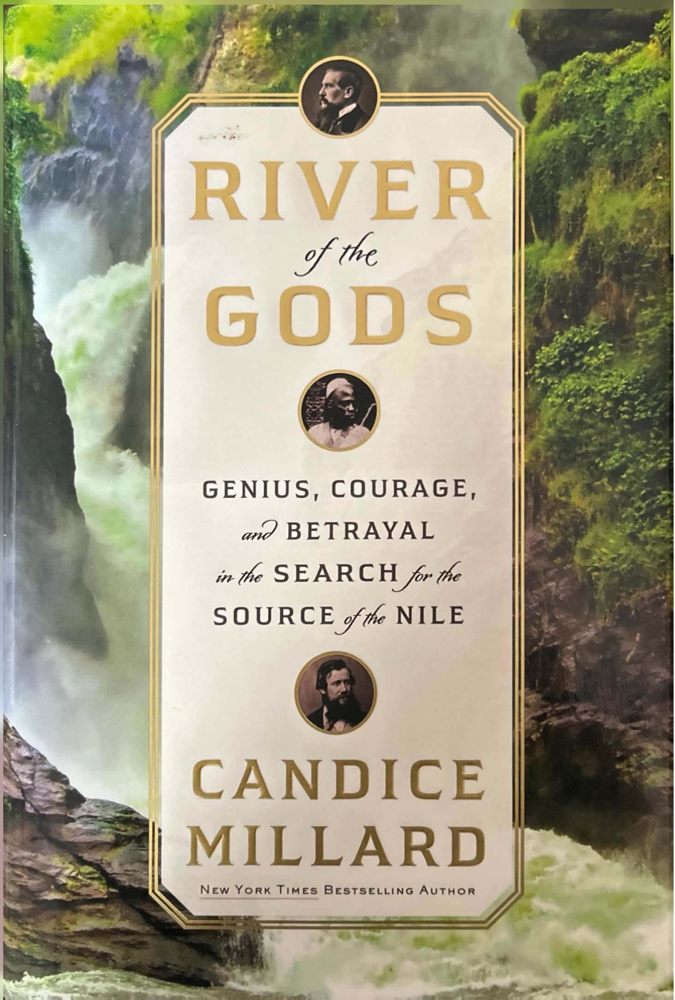
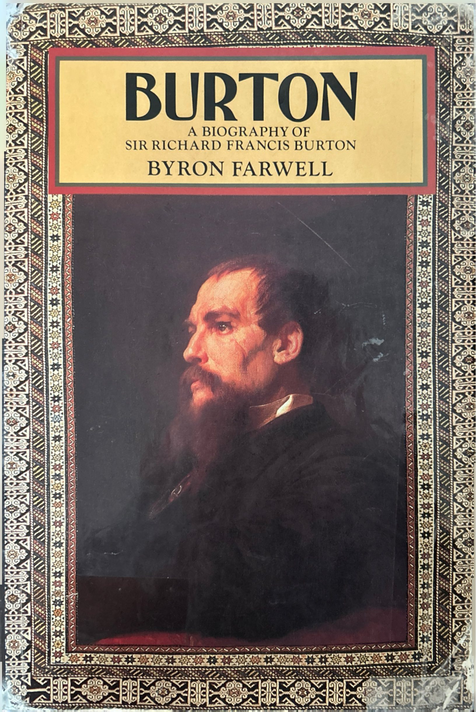
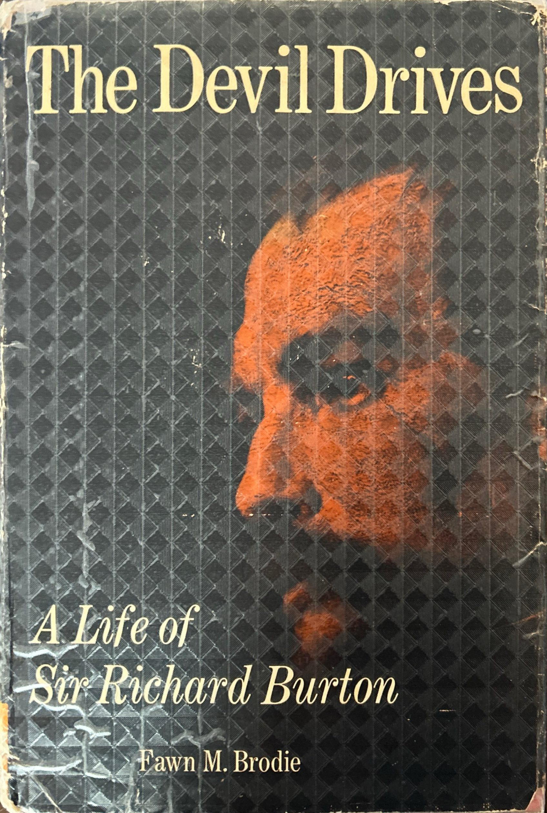

Introduction
The book Explorers of the Nile: The Triumph and Tragedy of the Great Victorian Adventure by Tim Jeal contradicts every other account I have read regarding the dispute between Richard Burton and John Speke, including River of the Gods by Candice Millard, A Biography of Sir Richard Francis Burton by Byron Farwell, and The Devil Drives: A Life of Sir Richard Burton by Fawn M. Brodie.




Tim Jeal’s Version versus the Traditional Accounts
The most recent of these is River of the Gods published in 2022 by Candice Millard. Before reading it, I had already read the biographies by Byron Farwell and Fawn M. Brodie (both published in the 1960s). Their versions are broadly similar: Speke betrayed his leader by going to the Royal Geographical Society first and announcing that he had discovered the source of the Nile while Burton was still on his way home. By doing so, he secured command of the next expedition. Speke later boasted on several occasions, “I am sure everybody at Zanzibar knows that I was the leader and Burton the second of the Expedition.”
To quote from River of the Gods:
Astonished, Burton wrote that he “found the ground completely cut from under my feet.” As he struggled to understand what had happened to his expedition while he was still in Aden, one thing became painfully clear: Speke was no longer his friend and protégé but his adversary. “My companion now stood forth in his true colours,” Burton wrote, “an angry rival.”
Tim Jeal’s book offers a very different version. He argues that Burton privately accepted Speke’s theory and then deliberately misled him. According to Jeal:
Burton said “To this [Speke’s map] I would respectfully draw the attention of the committee as there are grave reasons for believing it to be the source of the principal feeder of the White Nile.” He compounded the dishonesty of keeping his true beliefs to himself by embarking on a long and increasingly vindictive campaign to discredit Speke.
Jeal further claims that Burton told Speke he would return home via Jerusalem. By pretending it would be many months before he reached England, Burton hoped to lull Speke into thinking he had plenty of time and need not rush to the RGS the moment he landed. Then, if Burton caught the next steamship while Speke relaxed with his family in the country, Burton might arrive first and seize command of the next expedition.
This version was reviewed in The Guardian: How feud wrecked the reputation of explorer who discovered Nile's source. In short, the review presents Jeal’s argument that “jealous but charismatic Sir Richard Burton managed to push travelling partner John Speke out of the historical limelight.”
I find Jeal’s version difficult to believe. When reading his book I repeatedly felt that his reasoning was flawed. Yet the New York Times Book Review praised it highly: “Explorers of the Nile is a brilliant, scholarly and at times almost unreadably vivid account of the two decades in the middle of the 19th century when the search for the Nile’s source in central Africa was at its height.”
Two Main Reasons I Find Jeal’s Version Hard to Accept
All four authors are well-regarded. So whose version is closer to the truth?
First, I have never found any evidence elsewhere that Burton privately accepted Speke’s theory before Stanley’s confirmation. In all the contemporary sources and later biographies I have consulted (Farwell, Brodie, Millard), Burton consistently rejected Speke’s geographical conclusions until Henry Morton Stanley proved it almost twenty years later. Only then did Burton finally accept defeat.
Second, even if we assume for the sake of argument that Burton did privately accept Speke’s theory, he was still the leader of the expedition. Why invent a lengthy detour via Jerusalem instead of simply returning directly to the RGS and requesting command of the next expedition? Jeal’s explanation—that Burton was trying to trick Speke into delaying his own return—strikes me as unnecessarily elaborate and unsupported by any documentary evidence from Burton’s side.
Jeal’s book consistently defends Speke’s actions and portrays him as essentially decent, while depicting Burton as thoroughly despicable. Make no mistake: Burton was no saint either. When discussing their dispute we are truly talking about the lesser of two evils.
Speke’s Pattern of Betrayals
Yet when I re-read the story through the lens of River of the Gods, I still find Speke’s behaviour hard to excuse. His actions, as presented by Millard, included but were not limited to the following:
- Betraying Burton by racing to the RGS while Burton was still en route.
- Leaving James Grant behind so that he alone could claim the glory of seeing the Nile issue from the Nyanza.
“who had shared in the difficulties, expenses, and dangers of the expedition, would be deprived of both the thrill of the moment—seeing the Nile as it rushed from the Nyanza—and the glory that was to come.”
Jeal also records that “the normally sweet-natured Grant was seized by an uncharacteristic fit of rage”. In years to come, Speke’s critics would say that he selfishly reserved for himself what he believed would be the discovery of the Nile’s source. Grant always denied this, insisting he had been “positively unable to walk twenty miles a-day ...” Three days after they parted, however, the normally sweet-natured Grant ordered a goat-boy who had briefly lost sight of his flock to be given twenty lashes—a severe punishment for a minor offence.
- Accusing John Petherick of participating in the slave trade and thereby destroying his reputation, simply because Petherick arrived late at Gondokoro.
“Spreading the rumor that he (Speke) had heard in Gondokoro from Petherick’s trading rivals, men whom Petherick had arrested for selling enslaved people, Speke suggested that the consul himself had taken part in the slave trade. ... For Petherick, the repercussions were immediate and devastating.”
- Betraying the then president of RGS, Sir Roderick Murchison, who had championed his expedition and initially held him in high regard. Instead of giving a full account to the Society as was customary, Speke published first with Blackwood. Murchison was astonished by the disregard. Only after months of pressure did the RGS receive a short article from Speke, and even that was so inadequate that Murchison dictated a terse letter complaining of its “very brief and imperfect character.”
In short, Speke appears to have alienated almost everyone connected with his second expedition. This makes it difficult for me to accept the portrait of him as a fundamentally decent man.
The accusation against John Petherick is especially worth examining, because almost every other source agrees that Speke’s charges were unjustified. The Devil Drives states (p. 221):
Privately he (Speke) accused Petherick of selling stores which really belonged to him. Publicly, with no justification, he accused Petherick of participating in the slave trade.
Jeal offers a different explanation: Samuel Baker could easily have warned Speke that he himself believed Petherick innocent, but chose not to. Baker wanted to replace Petherick as the man who would “succour” the explorers, and he hoped that when Petherick eventually arrived, Speke would be unwilling to share any glory with him. The less Speke liked Petherick, the better for Baker—or so Baker appears to have calculated. In Jeal’s narrative, Baker becomes another villain who manipulated the unsophisticated Speke.
Another detail illustrates why I find Jeal’s reasoning unconvincing. Before leaving London for his second expedition, Speke wrote Burton a farewell note that can be read as a gesture of reconciliation. After the harm he had already done, such a note was hardly surprising.
The Devil Drives (p. 171) describes it as “conventional enough save for the poignantly revealing first line, ‘I cannot leave England addressing you so coldly.’”
River of the Gods adds:
Now, however, as he prepared to take command of his own expedition, Speke’s feelings had begun to shift from resentment to magnanimity. ... Two days before Speke was to leave on his expedition, he wrote to Burton one last time. “My dear Burton,” he wrote, attempting to return to a friendlier tone. “I cannot leave England addressing you so coldly...”
Jeal, however, writes: “Speke’s true character shines out in a note he wrote to Burton on 16 April 1860, shortly before leaving England...”
Can a single conventional farewell note really be treated as evidence that Speke’s true character “shines out”?
What Some Reviewers Said about Jeal’s Book
While reading Jeal’s book I kept feeling that the author was determined to rehabilitate Speke at almost any cost. One Amazon reviewer put it well:
Tim Jeal goes to heroic lengths to establish his hero, Speke, as the un-credited one. It is a dramatic tale, and Jeal’s sense of injustice having been done in this determination, he makes sure you get the correct picture; being the author, he has taken on the roles of judge and jury, infusing it with new layers of passion. This skews the evidence always in favor of Speke and to the detriment of most anyone else, particularly Sir Richard Burton.
The New York Times Book Review, by contrast, praises Jeal’s achievement in rescuing Speke “from his unwarranted relegation to the second rank” and in presenting “a subtle and attractive character who was far from a prude.”
The Wall Street Journal review is more measured:
Mr. Jeal is his ardent supporter. Nothing the wily Burton did was, in Mr. Jeal’s eyes, honest or aboveboard; Speke, by contrast, could do no wrong. Mr. Jeal makes an almost unanswerable case, but his stridency makes the reader wary.
Conclusion
In the end, the existing documentary record—as presented by Farwell, Brodie, and Millard—still seems to me more consistent and better supported than Jeal’s revisionist account. Until new evidence appears that Burton privately accepted Speke’s theory and deliberately delayed his own return via Jerusalem, I remain unconvinced.
P.S. I first asked the question and provided my own answer at history.stackexchange. I recently learned Tim Jeal had died in August 2026 through Tim Jeal obituary. That prompted me to revisit the topic and write this essay.